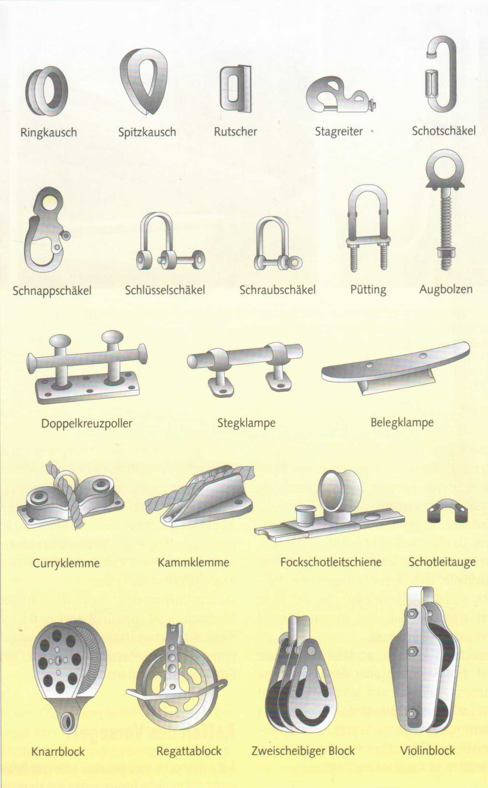
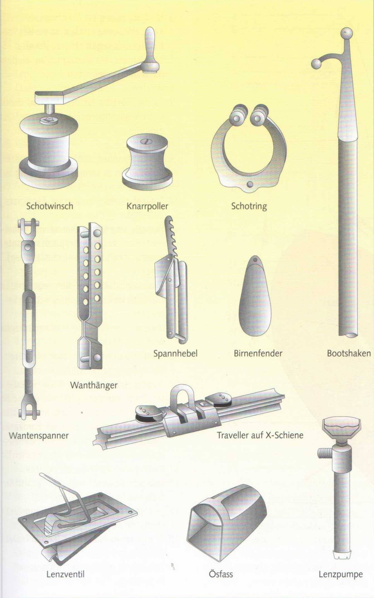
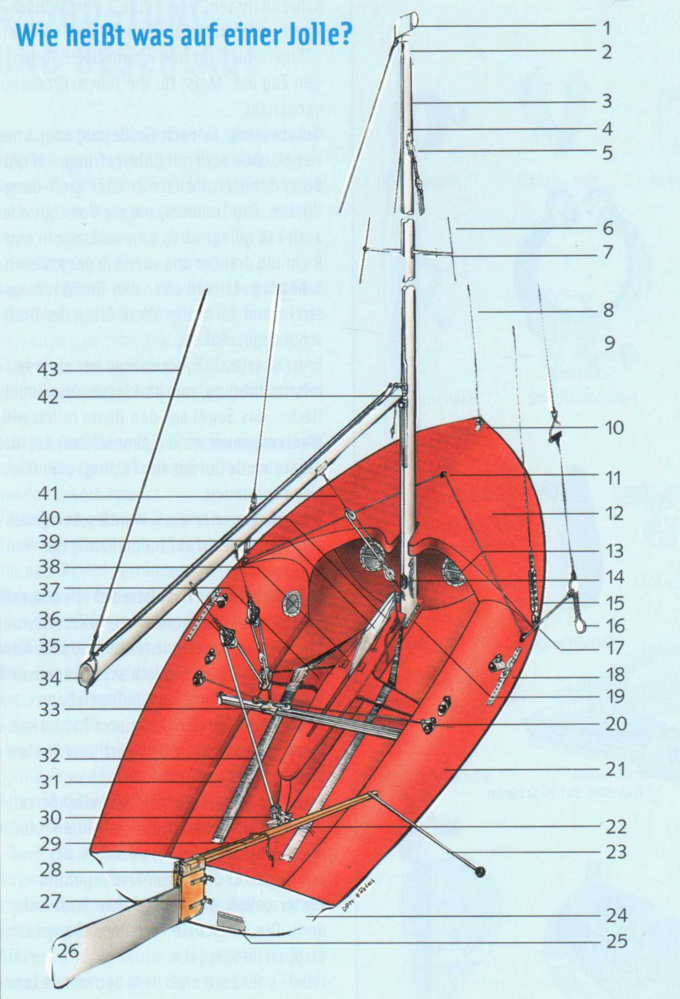
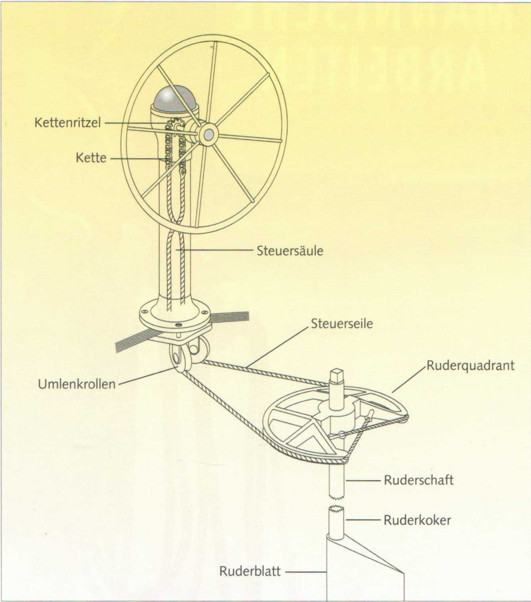

Zur Ausrüstung eines Bootes gehört eine Vielzahl von Beschlägen. Beschlag ist ein Sammelbegriff für nahezu alle Einrichtungen an Bord, die irgendetwas verbinden, befestigen, festhalten oder auch nur der Arbeitserleichterung dienen.
Kausch: Metall- oder Kunststofföse als Einlage oderzurVerstärkung, z. B. in einemTau-werkauge zum Schutz gegen Scheuern.
Stagreiter am Vorliek der Vorsegel werden beim Segelsetzen aufs Vorstag gesetzt oder gehakt.
Schäkel sind kleine Bügel, meistens aus nicht rostendem Stahl, um alles Erdenkliche miteinander zu verbinden.
Püttings oder Rüsteisen sind sehr verschiedenartige Beschläge, die das stehende Gut mit dem Rumpf verbinden.
Klampen und Poller dienen zum Belegen von Tauwerk. Kleinere Klampen sind aus Kunststoff oder Holz, stärkere meistens aus Metall. Klemmen bekneifen Leinen. Die Curryklemme hat zwei bewegliche Backen, die sich bei Gegenzug öffnen, die Kammklemme (Clam-cleat) bekneift in einem geriffelten Spalt, häufig verwendet am Schwert- oder Ruderfall. Fockschotholepunkte sind meistens auf einer Leitschiene - einem Lochband mit Federstift - verstellbar. Sie ermöglichen den Trimm in ihrer Größe unterschiedlicher Vorsegel. Zur einfachen Fockschotführung dienen feste Leitaugen oder-ösen.
Blöcke sind Gehäuse mit gekehlten Rollen (Scheiben), über die eine Leine läuft. Ein Block kann nur eine Scheibe haben oder aus einer Kombination von Scheiben bestehen. Entsprechend der Art ihrer Verwendung haben Blöcke am Fuß oder Kopf die unter-

schiedlichsten Beschläge. Der Winsch-, Knarr- oder Ratschblock hemmt den unfreiwilligen Rücklauf und nimmt durch Reibung den Zug auf. Meist für die Jollen-Großschot verwendet.
Schotwinsch: Je nach Größe mit oder ohne Hebel, ohne oder mit Untersetzung, auf größeren Schiffen auch als 2- oder gar 3-Gang-Winsch. Die Trommel, um die Vorschot oder auch Fall gelegt wird, ist jeweils nur in einer Richtung drehbar und sperrt in der anderen. Schotring: Er wird über den Großbaum gestreift und daran der obere Block der Großschot angeschäkelt.
Er ist unerlässlich, wenn man bei einer Mittelschotführung, zum Verkleinern der Segelfläche, das Segel auf den Baum rollen will. Wantenspanner sind Spannschrauben, die das stehende Gut mit den Püttings oder Rüsteisen verbinden.
Wanthänger oder auch Wantlaschen (Lochbänder) ersetzen auf Jollen häufig die Wantenspanner.
Spannhebel oder Hebelstrecker dienen zum Durchsetzen von Backstagen, Fallen etc. Fender sind Schutzpolster aus Gummi oder Kunststoff. Es gibt zylindrische, kugel- und birnenförmige, massive, aufpumpbare.
Bootshaken, zuweilen mit einem Paddel kombiniert, dienen auf Jollen auch zum Ausbaumen der Fock.
Traveller: Quer übers Cockpit laufende Leitschiene, auf der der Travellerschlitten rutscht oder rollt, auf dem der Fußblock der Großschot sitzt. Er dient dem Großsegeltrimm.
Lenzer sollen Wasser aus dem Boot befördern. Die einfachste Form besteht aus zwei Klappen im Spiegel.
Hand- oderauch elektrisch betriebene Lenzpumpen sind für die Sicherheitsausrüstung eines größeren Bootes unerlässlich. Es können Kolben- oder Membranpumpen sein.
Ösfass oder Pütz: ein Schöpfgerät.

1 Verklicker, Drehvorrichtung einer Windfahne auf dem Masttopp.
2 Großfall-Umlenkrolle, sitzt im (hohlen) Mast.
3 Mast, durchweg aus Aluminium.
4 Keep, Hohlkehle im Mast, in die das Vorliek des Großsegels eingezogen wird.
5 Wanthänger, ein Blechbeschlag, an dem die Wanten befestigt sind.
6 Wanten.
7 Saling, Spreize für die Wanten, damit sich ein günstigerer Zugwinkel zum Mast ergibt.
8 Vorstag.
9 Vorstagspanner, um das Vorstag steif durchsetzen zu können (fehlt häufig auf Jollen).
10 Stevenbeschlag, an ihm ist das Vorstag befestigt.
11 Trapezleitöse für den umlaufenden Gum-mistropp, der den Trapezdraht unter Spannung hält (haben nicht alle Jollen).
12 Vordeck.
13 Inspektionsluken für die eingeformten Lufttanks im Vorschiff und unter den Seitendecks.
14 Umlenkrollen für das im Mast verlaufende Groß- und Fockfall.
15 Wantenspanner, Lochbänder mit Bolzenverbindung, durch Splinte gesichert.
16 Trapezgeschirr, ein am Mast befestigter Draht mit Handgriff und Ring zum Einhaken des Trapezgurtes, an dem sich der Vorschoter weit über die Bordkante hinausschwingt, um das Boot besser auszubalancieren (haben nicht alle Jollen).
17 Pütting, Wantbefestigung im Deck.
18 Fockschot-Leitschiene mit Schlitten, Umlenkrolle und Curryklemme.
19 Mastspur mit Mastfußbolzen zum Verstellen des Mastes.
20 Curryklemme mit Leitöse für den Traveller-Stopper.
21 Seitendeck, gleichzeitig Lufttank.
22 Ruderpinne.

23 Pinnenausleger, meistens um 360° schwenkbar und hochklappbar.
24 Spiegel, hinterer Abschluss des Cockpits.
25 Lenzklappe, durch die Wasser aus dem Cockpit abfließen kann.
26 Senkruderblatt, hieraufgeholt.
27 Ruderschaft, bestehend aus zwei Ruderbacken, befestigt an Ruderzapfen.
28 Ruderkopf.
29 Ruderfall zum Absenken und Aufholen des Ruderblattes.
30 Großschot-Ratschblock mit Wirbel, der in einer Richtung blockiert.
31 Cockpit (seltener auch Plicht), auf Jollen der gesamte nicht eingedeckte Innenraum.
32 Ausreitgurte, hinter die die Füße gehakt werden.
33 Traveller mit Großschotschlitten, er reguliert den Zugwinkel der Großschot in der Waagerechten.
34 Baumnock.
35 Baum mit Keep (Nut), in die das Unterliek des Großsegels eingezogen wird.
36 Großschot mit Blöcken (Umlenkrollen).
37 Schwertkasten-Absteifung.
38 Schwertkasten.
39 Senkschwert. •
40 Schwertfall zum Aufholen und Fieren des Schwertes.
41 Baumniederholer, der das unerwünschte Steigen des Baumes auf Raumschots- und Vorm-Wind-Kursen verhindert.
42 Lümmel(beschlag), die Verbindung zwischen Baum und Mast.
43 Dirk, eine zum Masttopp führende Leine, in der der Baum ohne Segel hängt, sofern er nicht in einer Baumstütze oder-schere ruht.
Während Jollen und kleinere Kielyachten mit einer Ruderpinne, meist mit Pinnenausleger, gesteuert werden, setzt sich auf größeren Yachten zunehmend die Radsteuerung durch. Die Pinnensteuerung erfordert mehr körperliche Kraft, die Übertragung aber ist direkter und vermittelt ein unmittelbares Gefühl für das Boot. Es gibt nur wenig Verschleißteile. Bei der Radsteuerung erfolgt die Kraftüber

tragung auf das Ruderblatt über Ketten-, Seil- oder Bowdenzüge, über Gestänge, Wellenanlagen oder hydraulisch mit Öldruck. Die Anlage ist dementsprechend störanfälliger als eine Pinnensteuerung und muss regelmäßig kontrolliert und gewartet werden.
Der Ruderkoker ist die wasserdichte Durchführung des Ruderschaftes durch den Bootsrumpf.